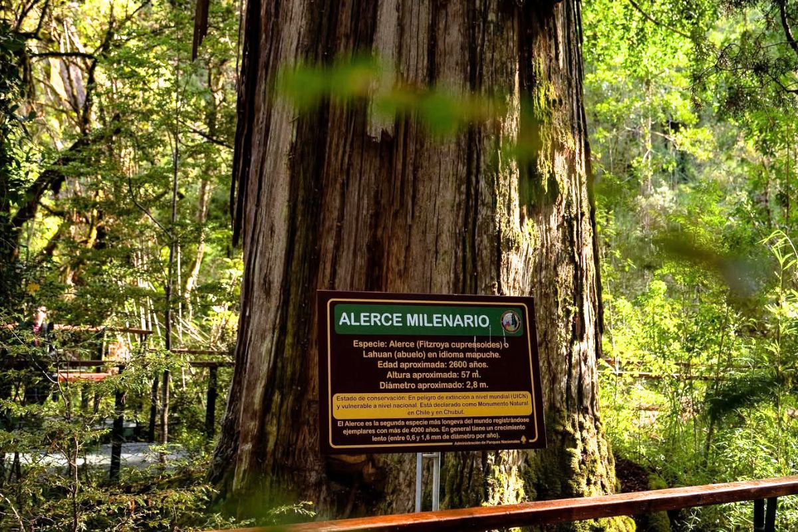
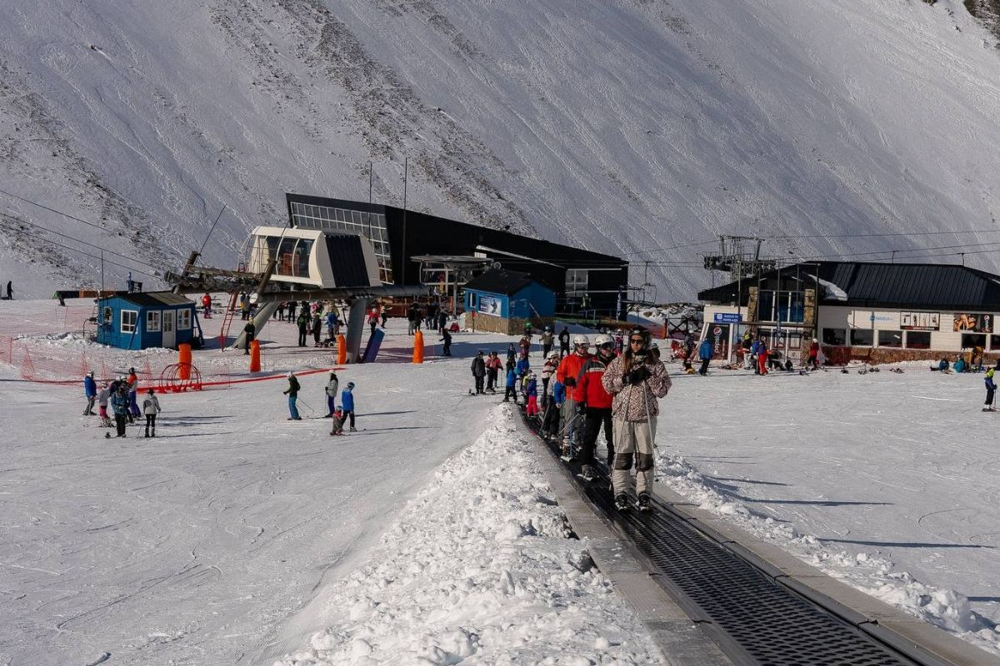
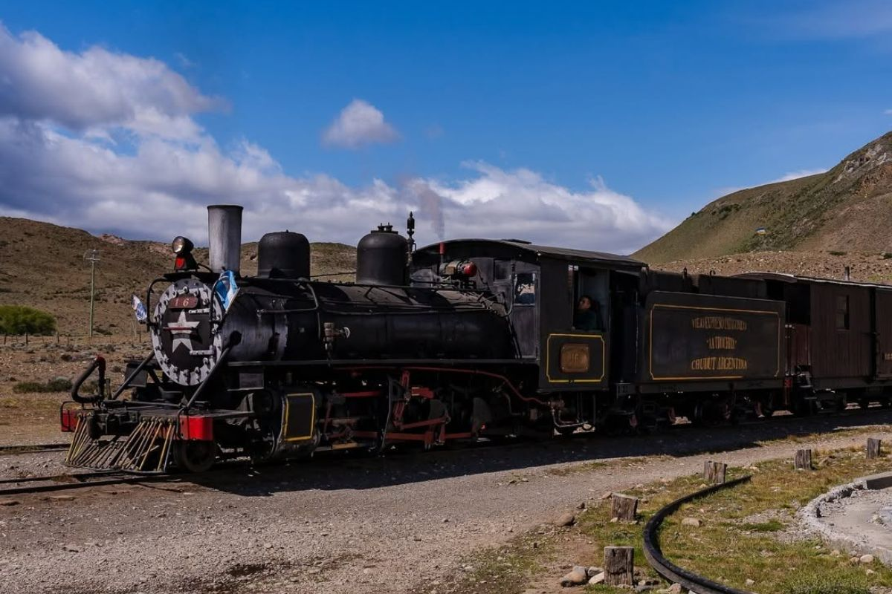
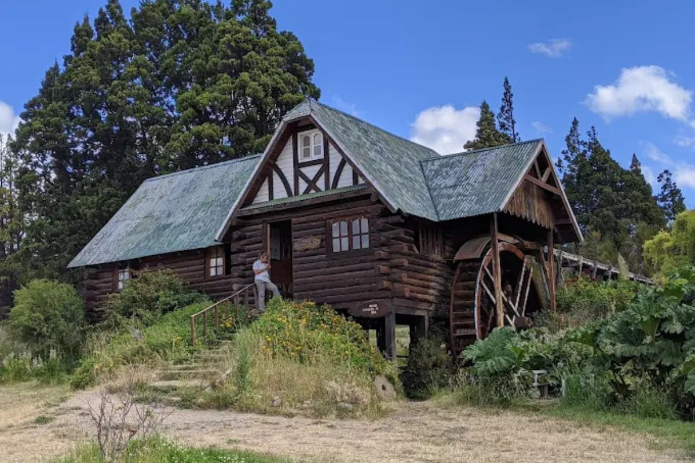
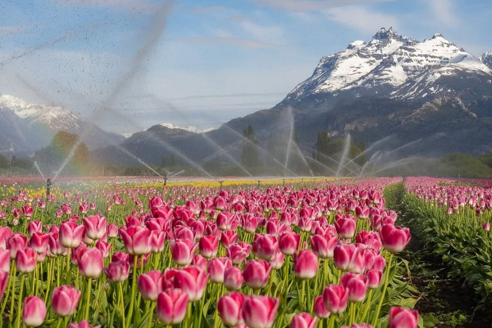
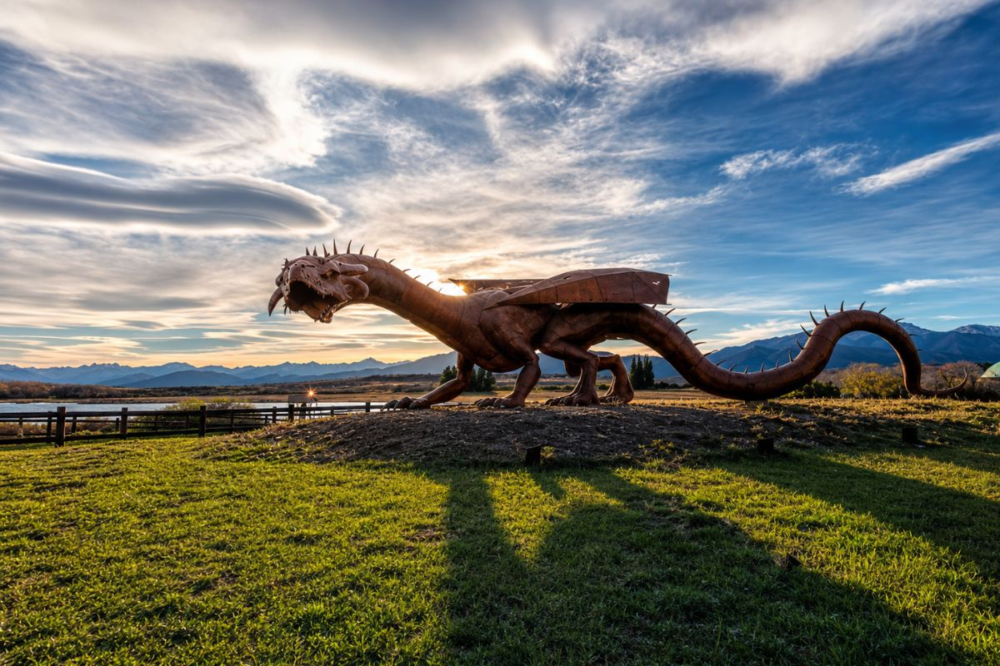

UNESCOParque Nacional Los Alerces
Navegá entre lagos turquesa hasta el bosque de alerces milenarios, incluido el Alerce Abuelo, de más de 2.600 años.
Ver excursiones al parque →Cordillera · Chubut · Patagonia Argentina
Bosques de alerces milenarios, un centro de esquí entre montañas, un tren a vapor centenario y la cálida cultura galesa de la cordillera. Toda la magia del oeste de Chubut, lista para reservar.
El destino
Esquel es la ciudad más importante del noroeste de Chubut y la base perfecta para explorar la cordillera: desde acá se llega al Parque Nacional Los Alerces, Patrimonio de la Humanidad, con lagos transparentes y alerces de más de dos mil años. En invierno, el cerro La Hoya es uno de los centros de esquí más queridos del sur.
A solo 25 kilómetros, Trevelin conserva viva la herencia galesa: casas de té, el histórico molino, la cascada Nant y Fall y, en primavera, los campos de tulipanes. Completan la postal el tren La Trochita y el río Futaleufú.
Qué hacer
Cada actividad te lleva directo a las salidas disponibles, con precios y fechas actualizadas.

UNESCONavegá entre lagos turquesa hasta el bosque de alerces milenarios, incluido el Alerce Abuelo, de más de 2.600 años.
Ver excursiones al parque →
Jun – SepUno de los mejores centros de esquí de la Patagonia, con nieve seca y pistas para todos los niveles a 15 minutos de Esquel.
Ver salidas a La Hoya →
HistóricoSubite al legendario tren a vapor de trocha angosta, una joya ferroviaria centenaria entre montañas.
Ver paseos en La Trochita →
Cultura galesaRecorré el molino histórico y disfrutá del clásico té de la tarde con tortas caseras en una casa de té tradicional.
Ver experiencias en Trevelin →
Sep – OctCada primavera, los campos de Trevelin se cubren de cientos de miles de tulipanes de todos los colores con la cordillera nevada de fondo. Uno de los espectáculos florales más fotografiados de la Patagonia, a solo 25 km de Esquel.
Ver excursiones →
Nuevo atractivoA orillas de la Laguna Carao se alza un imponente dragón de hierro de 17 metros y una tonelada, obra del escultor Tomás Schinelli inspirada en el primer poblador galés de la laguna. Un nuevo ícono cerca de Esquel, perfecto para una salida diferente y para la foto.
Ver excursiones →Todo lo que necesitás para planear tu viaje sin perder tiempo: itinerarios día por día, precios reales y los secretos que solo conocen los locales.
Planificá tu viaje
| Experiencia | Mejor época | Dónde |
|---|---|---|
| Esquí y nieve | Junio a septiembre | Cerro La Hoya |
| Lagos y senderos | Diciembre a marzo | Parque Nacional Los Alerces |
| Floración de tulipanes | Sep a octubre | Trevelin |
| Rafting y aventura | Octubre a abril | Río Futaleufú |
Preguntas frecuentes
El verano (diciembre a marzo) es ideal para los lagos y senderos del Parque Los Alerces; el invierno (junio a septiembre) es temporada de esquí en La Hoya; y la primavera suma la floración de tulipanes en Trevelin.
Trevelin está a unos 25 km de Esquel, unos 30 minutos en auto. Por su cercanía suelen recorrerse en un mismo viaje.
Entre mediados de septiembre y mediados de octubre, según el clima de cada temporada.
Compará excursiones, mirá disponibilidad real y reservá online con beneficios exclusivos.
Ver todas las excursiones